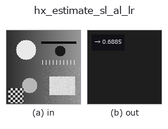

halcon_ext op• 数据种类:image → feature
• 调用:fullseye.apply(img, "hx_estimate_sl_al_lr", a=0.5, b=0.5)(2-D 的模型是一张图 + 两个标量旋钮 a,b∈[0,1])
• HALCON 对应:estimate_sl_al_lr(其含义与参数可参考 HALCON 手册)

*图为在 128×128 合成输入上实际运行的输出。左为输入，右为输出。点云以俯视散点显示(亮度 = z)，一维序列为折线，体数据为沿 z 的最大值投影，视频为中间帧，复数图像为幅值；无法成像的返回值直接显示数值。*
*旋钮 a 不改变输出(实测: 0.1 / 0.5 / 0.9 相同)。*
*旋钮 b 不改变输出(实测: 0.1 / 0.5 / 0.9 相同)。*
Lee-Rosenfeld:估计光源的 slant(天顶角,0=正面 ~ pi/2=侧向)。归一化到 [0,1]。
把图像的平均亮度 <I> 套入反射率为 1 的 Lambertian 面的关系 <I> = albedo * cos(slant),把 slant = arccos(<I>) 除以 pi/2 后以 np.float64(0〜1)返回。0 是正面光(平均 1.0),1 是正侧面(平均 0)。
• a、b 未使用。
• 平均值先 clip 到 [0,1] 再传给 arccos,因此不会越界。
实质上是“平均亮度越低 slant 越大”的 1 对 1 映射,并假定反射率为 1(暗的材质也无法与斜射光区分)。用梯度修正的版本是 hx_estimate_sl_al_zc,反射率的代理值见 hx_estimate_al_am。在与 hx_shade_height_field 的仰角 b 组合来再现阴影时作为参考使用。
• 示例数据目录(下载 URL / 许可证) —— 2-D 用 skimage.data(BSD/公有领域)加合成图,3-D 给出真实数据源(Stanford/PDS 等)的下载 URL。
• 算子来历与参考文献 —— 该算子族所依据的研究/方法出处。
• 算法的正典(作者、年份)与用途见上面的族使用指南。
下面的程序已确认可以运行(与图相同的输入)。在 Studio 帮助中，此块会变成按钮，可当场加载并运行。
hx_estimate_sl_al_lr 0.50 0.50
• gallery2d_halcon_ext — py -3.11 examples/gallery2d_halcon_ext.py
feature 作为输入)halcon_ext)hx_gen_circle · hx_gen_ellipse · hx_gen_rectangle2 · hx_gen_checker_region · hx_gen_grid_region · hx_gabor · hx_fit_surface1 · hx_fit_surface2
*Provenance: ops.py — 2D 算子登记表。本条目由 tools/opdocs.py md 自动生成(请勿手工编辑)。*
© 2026 Kazufumi Furuse — Fullseye operator documentation. Licensed under Apache-2.0.